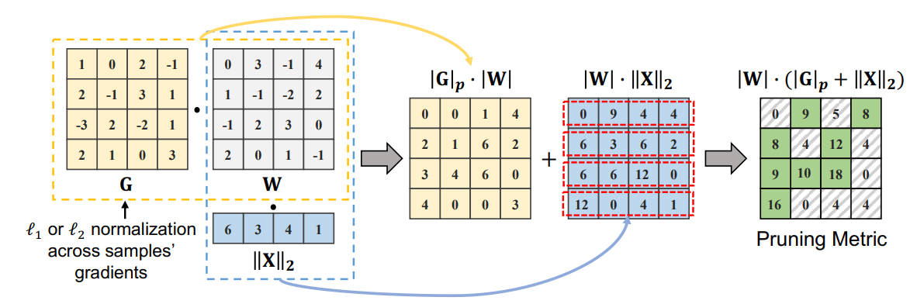

Beyond Size: How Gradients Shape Pruning Decisions in Large Language Models

Abstract
Large Language Models (LLMs) with billions of parameters are prime targets for network pruning, removing some model weights without hurting performance. Prior approaches such as magnitude pruning, SparseGPT, and Wanda, either concentrated solely on weights or integrated weights with activations for sparsity. However, they overlooked the informative gradients derived from pretrained LLMs. In this paper, we present a novel sparsity-centric pruning method for pretrained LLMs, termed Gradient-based Language Model Pruner (GBLM-Pruner). GBLM-Pruner leverages the first-order term of the Taylor expansion, operating in a training-free manner by harnessing properly normalized gradients from a few calibration samples to determine the pruning metric, and substantially outperforms competitive counterparts like SparseGPT and Wanda in multiple benchmarks. Intriguingly, by incorporating gradients, unstructured pruning with our method tends to reveal some structural patterns, which mirrors the geometric interdependence inherent in the LLMs' parameter structure. Additionally, GBLM-Pruner functions without any subsequent retraining or weight updates to maintain its simplicity as other counterparts. Extensive evaluations on LLaMA-1 and LLaMA-2 across various benchmarks show that GBLM-Pruner surpasses magnitude pruning, Wanda and SparseGPT by significant margins. We further extend our approach on Vision Transformer. Our code and models are available at https://github.com/VILA-Lab/GBLM-Pruner.